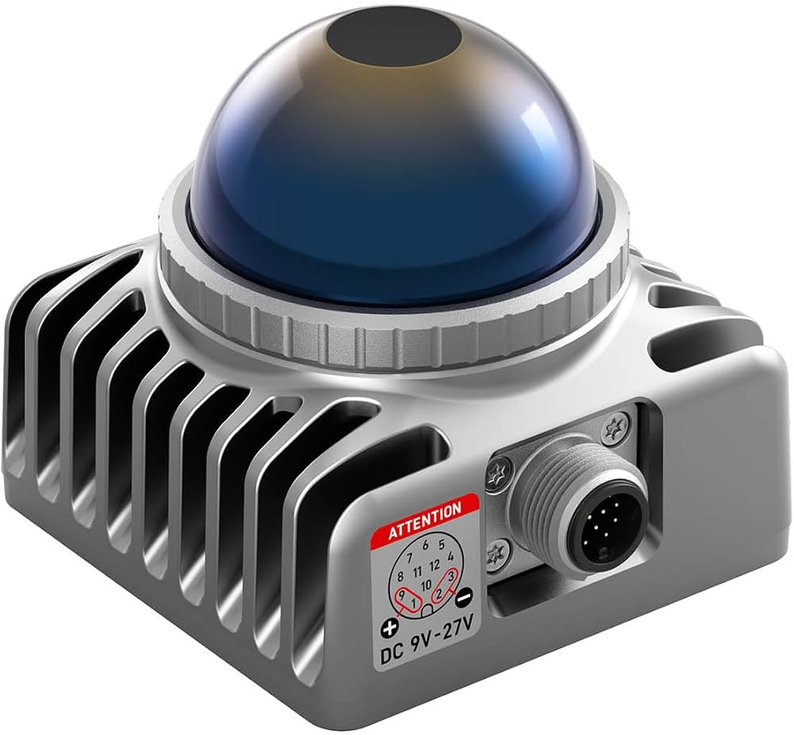

CAD Modeling, 3D Printing & LiDAR Systems
Comprehensive hands-on induction training at AU QUASAR. Mastered manual parametric modeling, G-code slicing workflows, additive manufacturing on Creality hardware, and spatial data acquisition using 2D and 3D LiDAR sensors.
Studio Software & Hardware Toolkit
Used for precise manual 3D sketching, extrusion cutting, and structural component modeling.
Configured layer heights, infill densities, and toolpath simulations for optimal 3D builds.
Executed physical prototyping, bed leveling, and live print jobs of custom parts like the RAS3 badge.
Explored point cloud generation, ranging mechanics, and environmental scanning configurations.
CAD Design & Slicing Workflow
Taught by professional mentors at AU QUASAR, we learned how to manually conceptualize and construct digital models from scratch using Autodesk Fusion. Every dimension, fillet, and extrusion cut was meticulously planned before exporting models to Ultimaker Cura for precise layer-by-layer slicing analysis and print time estimation.
- Manual parametric sketch creation & dimensional constraints
- Extrude, cut, and body modification workflows in Autodesk Fusion
- Infill pattern optimization and toolpath previewing in Ultimaker Cura
Additive Manufacturing & LiDAR Systems
Transitioning from digital files to physical hardware, we operated the Creality 3D printer to fabricate custom functional pieces, such as the studio's "RAS3" components. Additionally, we received dedicated hands-on instruction regarding 2D and 3D LiDAR technology, understanding how time-of-flight measurements construct real-time spatial point clouds.
- Printer calibration, filament loading, and first-layer adhesion monitoring
- Live execution and thermal tracking on Creality build plates
- Hands-on study of 2D & 3D LiDAR sensor optics and data interpretation
Induction Session Visuals & Gallery

Autodesk Fusion Design
Manual parametric sketching and extrude-cut operations during the studio session.

Creality 3D Fabrication
Live thermal bed printing of the custom "RAS3" component.
Ultimaker Cura Slicing
Layer-by-layer toolpath simulation and infill configuration preview.

3D LiDAR Exploration
Studying 2D and 3D solid-state spatial sensing hardware units.